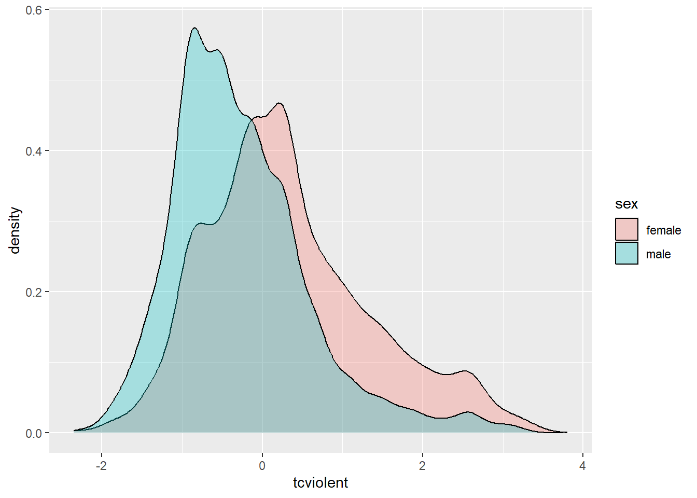
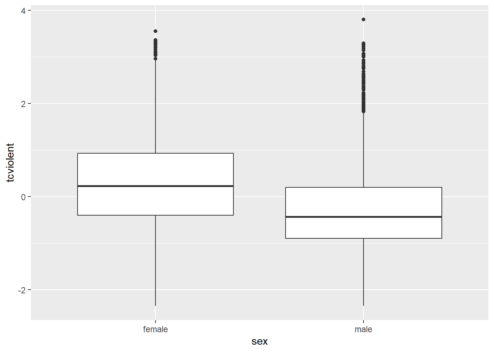

Chapter 5 Regression I: Mean differences
5.1 Introduction
Up to now we have introduced a series of concepts and tools that help describe variables. Descriptive statistics are crucial for summarising information about individual variables. However, in the social sciences, we often aim to go beyond description. We use data to test theories, investigate relationships, and uncover associations. This requires moving beyond single-variable analysis to examining the relationship between two variables. In this chapter, we begin exploring bivariate associations.
In bivariate analysis, we always start with a research question. Do Black and other ethnic minority citizens experience police stops more often than White citizens (i.e., ethnicity \(\rightarrow\) police stops)? Are violent crimes more common in low-income countries than in high-income countries (income level \(\rightarrow\) violent crimes)? Are people living in urban areas more likely to be victims of crime than those in rural areas (urbanisation \(\rightarrow\) crime victimisation)? These criminologically relevant research questions require the analysis of two variables simultaneously.
To answer a research question, we formulate a research hypothesis (or sometimes several research hypotheses related to it). A research hypothesis is simply a proposed answer to our research question that we can test by carrying out some research. Research hypotheses can be directional and non-directional:
“When the research hypothesis does not indicate a specific type of outcome, stating only that there is a relationship or a difference, we say that it is a non-directional hypothesis. However, in those cases where a researcher has a very clear idea of what to expect—based on prior research evidence and/or theory—the research hypothesis may be more precise. In this case, the researcher may specify the nature of the relationship that is expected. Such a research hypothesis is called a directional hypothesis. When a directional hypothesis is used, the researcher states at the outset that he or she is interested in a specific type of outcome -for example, that one group has more arrests than another. Suppose we are interested in comparing the arrest records of drug-involved offenders with those of offenders who do not use drugs. Our research hypothesis might be simply that the arrest records of drug-involved offenders and offenders who do not use drugs are different (a nondirectional hypothesis). But based on prior knowledge of criminal behaviour among drug-involved offenders, we might want to state a directional hypothesis - that drug-involved offenders have more serious arrest records than non-drug-involved offenders do. One problem with choosing the latter option is that if we state our research hypothesis as a directional hypothesis, we are stating that we are not interested in outcomes that fall in the opposite direction. In criminal justice research, we can often be surprised by what we learn in a study. Accordingly, researchers generally are cautious in defining a directional research hypothesis” (Weisburd and Britt, 2010: 120)
When formulating a research hypothesis, it is common practice to also formulate a null hypothesis. We will return to this discussion in more detail in Chapter 9 when introducing statistical inference. For now, it suffices to say that science always takes a sceptical approach and tests hypotheses against empirical data. For example, consider the research question: do Black and other ethnic minority citizens experience police stops more often than White citizens? Based on prior research (e.g., here or here), our research hypothesis could be that Black and other ethnic minority citizens are stopped by the police more frequently than White citizens. A sceptical approach, however, would begin with a null hypothesis: there is no difference in the frequency of police stops experienced by Black and other minority citizens compared to White citizens. We then test this null hypothesis against empirical data to draw conclusions about the association between ethnicity and the experience of police stops. More details on the rationale behind null hypotheses and the principles of hypothesis testing will be provided in Chapter 9!
From the research question and the research hypothesis (as well as the null hypothesis), we identify two variables, each with a distinct role. One variable represents the explanandum, the phenomenon we aim to explain—this is called the dependent variable (also referred to as the outcome variable or response variable). The other variable is the explanans, the phenomenon used to explain it—this is called the independent variable (also known as the explanatory variable or predictor variable). For example, in the question we explored earlier—Do Black and other ethnic minority citizens experience police stops more often than White citizens?— we are examining how the frequency of police stops varies depending on a person’s ethnicity. In this case, the frequency of police stops is the dependent variable, as it is the phenomenon we want to explain. Ethnicity is the independent variable, as it is the factor we believe influences the dependent variable. From now on, we will consistently identify dependent and independent variables based on research questions and hypotheses.
Your turn! In the research questions below, identify the dependent variable and the independent variable:
- Are violent crimes more common in low-income countries than in high-income countries?
Reveal answer!
- Unit of analysis: countries
- Dependent variable: frequency of violent crimes
- Independent variable: income level
- Are people living in urban areas more likely to be victims of crime than those in rural areas?
Reveal answer!
- Unit of analysis: people / members of the public
- Dependent variable: likelihood of crime victimisation
- Independent variable: urbanisation, or residence area characteristics (e.g., urban vs. rural areas)
- Do neighbourhoods with a heavier police presence experience less crime?
Reveal answer!
- Unit of analysis: neighbourhoods
- Dependent variable: frequency of crimes
- Independent variable: police prevalence (e.g., heavily policed vs. lightly policed)
- Does being on probation reduce the likelihood of reoffending compared to individuals not on probation?
Reveal answer!
- Unit of analysis: individuals / previous offenders
- Dependent variable: likelihood of reoffending
- Independent variable: probation (e.g., being on probation vs. not on probation)
- Does cannabis legalisation lead to higher self-reported levels of cannabis use?
Reveal answer!
- Unit of analysis: countries / cities / states
- Dependent variable: self-reported levels of cannabis use
- Independent variable: cannabis legislation (e.g., legalised vs. prohibited)
5.2 Dependent variable: numerical | Independent variable: binary
Throughout the semester, we will explore how to analyse relationships between variables across various combinations. If you examine the research questions above, they share a key feature: all the dependent variables are numerical, and all the independent variables are binary. Numerical variables represent measurable or countable quantities where arithmetic operations like addition, subtraction, multiplication, and division are meaningful. Examples from the research questions include the frequency of police stops, frequency of violent crimes, likelihood of crime victimisation, frequency of crimes, likelihood of reoffending, and self-reported levels of cannabis use. These are all numerical variables because they have numerical values that can be counted or measured. Binary variables (also referred to as dichotomous or dummy variables), on the other hand, represent categorical data with two mutually exclusive and exhaustive categories. Binary variables include only two possible levels, such as TRUE or FALSE, yes or no, or two distinct groupings. Examples from the research questions include: ethnicity (e.g., White vs. Black and other ethnic minorities), countries’ income level (e.g., low-income vs. high-income), area characteristics (e.g., urban vs. rural areas), police prevalence in neighbourhoods (e.g., heavily policed vs. lightly policed), probation status (e.g., being on probation vs. not being on probation), and cannabis legislation (e.g., legalised vs. prohibited)
This is the first bivariate analysis we will study.
FIRST BIVARIATE ANALYSIS
Dependent variable: Numerical Independent variable: Binary
Let’s elaborate with an example. Let’s start with the following research question: are women more afraid of violent crime than men? Previous research has consistently demonstrated a gender disparity in fear of crime, with women reporting higher levels of fear compared to men (e.g., here, here, here). While the dynamics of crime victimisation risk differ between men and women, the fear-gender gap persists across various contexts.6
Based on previous research, our research hypothesis is that women are more afraid of violent crime than men. However, adopting a sceptical approach, our null hypothesis states that there are no differences in fear of crime between men and women. To test this, we must contrast this statement with empirical data. For this example, we will use data from the Crime Survey for England and Wales (2007–08), which provides a representative sample of the adult population living in England and Wales. This dataset includes information on respondents’ fear of crime, making it suitable for addressing our research question. Let’s begin by loading the dataset.
# load readr library and import the data using read_csv() function
library(readr)
csew_0708 <- read_csv("https://raw.githubusercontent.com/uom-resquant/modelling_book/refs/heads/master/datasets/BCS0708.csv")The variables of interest in our analysis are tcviolent and sex. The variable tcviolent is an index of fear of violent crime, measured on a numerical scale where lower scores indicate less fear and higher scores indicate greater fear. To summarise this variable, we can use the summary() function. As shown below, the mean score is 0.05, with a minimum of -2.35 and a maximum of 3.81.
## Min. 1st Qu. Median Mean 3rd Qu. Max. NA's
## -2.350 -0.672 -0.117 0.046 0.540 3.805 3242In this dataset, sex is a binary variable—unfortunately, the survey instrument did not measure gender identification and is limited to responses recorded as ‘male’ or ‘female’. We can use the table() and prop.table() functions to summarise this variable, which respectively provide counts and proportions of the number of observations in our data that take distinct values for a given variable. 6369 (55%) respondents were recorded as female, whereas 5307 (45%) were recorded as male.
##
## female male
## 6369 5307##
## female male
## 0.5454779 0.45452215.3 Calculating mean differences in R
Now, how can we examine whether women are more afraid of violent crime than men? To address this research question, we need to evaluate the association between the variables tcviolent and sex. This process builds on concepts introduced in Chapter 3. In Chapter 3, we learned how to describe numerical variables using measures of central tendency (such as the mean and the median) and measures of dispersion (such as the standard deviation and the range). Among these, the mean is particularly effective for summarising symmetric and normally distributed data.
Given this, one straightforward strategy to assess whether women are more afraid of violent crime than men is to calculate the mean level of fear of violent crime only among women and compare it to the mean level of fear only among men. Adopting a sceptical approach—recalling the null hypothesis, which states that there are no differences in fear of crime between men and women—we would expect these two means to be roughly equal. If the means differ, this would provide evidence against the null hypothesis, suggesting that fear of violent crime varies between men and women and that the two variables (tcviolent and sex) are associated. In this context, the mean difference serves as the measure of association between a numerical dependent variable (tcviolent) and a binary independent variable (sex).
To calculate the mean of a numerical variable for specific subgroups, we can use the filter() function from the dplyr package. The filter() function allows us to subset the data based on specified conditions. For example, we can use the filter() function to calculate the mean of fear of violent crime for women and the mean of fear of violent crime for men. Note that when using filter(), you need to use a double equals sign (==) to specify equality.
# Install the 'dplyr' package if you haven't already
# install.packages("dplyr")
# Load the dplyr package
library(dplyr)
# Subset the data for female respondents
csew_0708_women <- filter(csew_0708, sex == "female")
# Check the number of rows in the filtered dataset
nrow(csew_0708_women)## [1] 6369As expected, the csew_0708_women dataset contains 6369 rows. This is the number of female respondents we had obtained before.
# Subset the data for male respondents
csew_0708_men <- filter(csew_0708, sex == "male")
# Check the number of rows in the filtered dataset
nrow(csew_0708_men)## [1] 5307Similarly, the csew_0708_men dataset contains 5307 rows, corresponding to the number of male respondents in the dataset.
Now, let’s calculate the mean level of fear of violent crime (tcviolent) for each subgroup:
# Calculate the mean of fear of violent crime for women
mean_fear_women <- mean(csew_0708_women$tcviolent, na.rm = TRUE)
# Calculate the mean of fear of violent crime for men
mean_fear_men <- mean(csew_0708_men$tcviolent, na.rm = TRUE)
# Display the mean of fear of violent crime for women
mean_fear_women## [1] 0.3281656## [1] -0.2738322The mean level of fear of violent crime among women is 0.33, while among men, it is -0.27. As anticipated, women report higher levels of fear of violent crime than men (since 0.33 \(>\) -0.27), providing evidence that gender differences in fear of crime exist.
To refine our analysis, we can calculate the mean difference between the fear of violent crime scores for men and women. The mean difference is simply the result of subtracting one group’s mean from the other.
# Calculate the mean difference
mean_difference <- mean_fear_men - mean_fear_women
# Display the mean difference
mean_difference## [1] -0.6019978The mean difference is -0.6. This indicates that the average score of fear of violent crime among male respondents is 0.6 lower than the average score among female respondents.
Note: The order of subtraction matters in interpreting the result, even though it does not change the numerical value.
Subtracting the mean for women from the mean for men highlights that men have lower fear scores while reversing the subtraction would emphasize that women have higher fear scores. It is crucial to align the direction of subtraction with the focus of the research question or the narrative you wish to convey. For example:
# Calculate the mean difference using the alternative order
mean_difference_alternative <- mean_fear_women - mean_fear_men
# Display the mean difference
mean_difference_alternative## [1] 0.6019978In this case, the mean difference is 0.6. This indicates that the average score of fear of crime among female respondents is 0.6 higher than the average score among male respondents.
If the null hypothesis were true (i.e., adopting a sceptical approach), we would expect the means for both groups to be approximately the same, resulting in a mean difference close to zero. A mean difference of -0.6 suggests that women tend to report higher levels of fear of violent crime than men in the Crime Survey for England and Wales, providing some evidence that allows us to address our research question.
5.4 Visual exploration
One simple strategy to depict the association between a numerical dependent variable and a binary independent variable (i.e., the mean difference) involves using data visualisation techniques. We already covered this in Chapter 3! For example, when we want to visualise the distribution of a numerical variable, we can produce a histogram, a density plot, or a boxplot. If we want to graphically represent the distribution of a numerical variable across two groups, we can produce a grouped histogram, a grouped density plot, or a grouped boxplot. This allows us to assess the association between a numerical dependent variable and a binary independent variable by examining their mean difference.
# load the ggplot2 package
library(ggplot2)
# produce a grouped density plot
ggplot(csew_0708, aes(x = tcviolent, fill = sex)) +
geom_density(alpha = .3)
This grouped density plot shows that the distribution of fear of violent crime (tcviolent) scores among female respondents is slightly shifted to the right compared to the distribution among male respondents. This suggests an association between gender and fear of violent crime—as we already knew—as women in this sample have a higher average score than men. The same pattern can be visualised with a grouped boxplot.

5.5 Using linear regression to calculate mean differences
Calculating mean differences in R is straightforward, as demonstrated above. We first filter the dataset by the groups of interest, compute the mean of the dependent variable for each group, and then calculate the difference between the two group-specific means. While this step-by-step approach is effective, it can become time-consuming when repeated for multiple analyses. Fortunately, R offers a more efficient alternative: the lm() function.
The lm() function, short for linear model, streamlines the process by calculating the mean difference directly. The function’s structure is simple:
- Specify the dependent variable first.
- Follow it with a tilde (\(\sim\)).
- Then, provide the independent variable and the dataset.
When the dependent variable is numerical and the independent variable is binary, the lm() function automatically calculates the mean difference. It saves time by performing all the necessary steps in one go. You can use it directly or save the output to an object for later use. For our example, the code would look like this:
# Linear model calculating the difference in fear of crime by sex
mean_difference_lm <- lm(tcviolent ~ sex, data = csew_0708)In this case:
tcviolentis the dependent variable (a numerical variable).sexis the independent variable (a binary variable).csew_0708is the dataset being analysed.mean_difference_lmis the name we assign to the object storing the model’s results.
This single line of code computes the mean difference in fear of violent crime between men and women based on the dataset csew_0708, offering a more streamlined approach to the analysis. Now, let’s examine the output.
##
## Call:
## lm(formula = tcviolent ~ sex, data = csew_0708)
##
## Coefficients:
## (Intercept) sexmale
## 0.3282 -0.6020The output has two parts:
Call: This section restates the formula you provided to the function, confirming that
tcviolentis the dependent variable,sexis the independent variable, andcsew_0708is the dataset.Coefficients: This section provides the results we’re most interested in, showing two estimates:
(Intercept):0.3282sexmale:-0.6020
If you recall from above, when we manually calculated everything, these numbers should look familiar! The average score of fear of violent crime among women (remember, we created the mean_fear_women object) was 0.3282—exactly what is reported as the Intercept in this output. And the mean difference (remember, we created the mean_difference object) was -0.602—exactly what is reported as the sexmale coefficient! This implies that male respondents have a fear score that is 0.3282 points lower than female respondents on average.
Note on how to figure out which comparisons the model is making:
As we discussed above, there are two possible comparisons. They are numerically equivalent (i.e., only the sign differs), but the interpretation changes. We can calculate mean_fear_men - mean_fear_women, which gives a mean difference of -0.602. Alternatively, we can calculate mean_fear_women - mean_fear_men, as we did when we created the mean_difference_alternative object, which gives a mean difference of 0.602. While these values are numerically the same, their interpretation focuses on different groups.
How to determine which comparison lm() is performing
The lm() function selects one category to be represented by the Intercept—this is known as the reference category. The reference category is the group being compared against, i.e., the right-hand side of the subtraction equation. The lm() function then calculates the difference between the other category and the reference category. This is visible in the output. For example, in the output above, the coefficient is labelled sexmale. This implies that female is the reference category, and the comparison being made is mean_fear_men - mean_fear_women. The coefficient sexmale: -0.602 therefore indicates that male respondents, on average, have a fear score -0.602 points lower than female respondents.
How R determines the reference category
- Character Variables: If the independent variable is a
charactervariable,lm()selects the first group alphabetically as the reference category. In this example, female comes before male, so female is set as the reference category. - Factor Variables: If the independent variable is a
factor, you can manually set the reference category. - Logical Variables: If the independent variable is
logical(i.e.,TRUEorFALSE),FALSEis automatically set as the reference category.
Changing the reference category. If we wanted to treat male as the reference category, we could do one of the following:
# Create a logical variable that is TRUE if the respondent is female
# and FALSE if the respondent is male
csew_0708 <- mutate(csew_0708, female_logical = sex == "female")
# Create a factor variable with 'male' as the reference category
csew_0708 <- mutate(csew_0708, female_factor = factor(sex, levels = c("male", "female")))We can then estimate new regression models using the female_logical and female_factor variables:
# Estimate a linear regression using 'female_logical' as the independent variable
lm(tcviolent ~ female_logical, data = csew_0708)##
## Call:
## lm(formula = tcviolent ~ female_logical, data = csew_0708)
##
## Coefficients:
## (Intercept) female_logicalTRUE
## -0.2738 0.6020# Estimate a linear regression using 'female_factor' as the independent variable
lm(tcviolent ~ female_factor, data = csew_0708)##
## Call:
## lm(formula = tcviolent ~ female_factor, data = csew_0708)
##
## Coefficients:
## (Intercept) female_factorfemale
## -0.2738 0.6020For both models, the outputs are identical. The Intercept now reflects the mean of fear of violent crime among male respondents (-0.27), as male is the reference category. The coefficient is also identical to the value stored in the mean_difference_alternative object (0.6). This coefficient is numerically equivalent to the previously estimated sexmale coefficient (-0.6), but the sign changes. With male as the reference group, the output reflects that female respondents have a fear score 0.6 points higher than male respondents on average.
5.5.1 Linear Regression
In the previous section, we used the lm() function to estimate mean differences and learned that lm stands for linear model. This function provides a way to estimate relationships using a statistical model, specifically the most basic and widely used model: linear regression. At its core, linear regression characterises the relationship between a dependent variable and one (or more) independent variable(s) using a linear model:
\[ Y = \underbrace{\alpha}_{\text{Intercept}} + \underbrace{\beta \cdot}_{\text{Slope}} \! X + \!\!\!\!\! \underbrace{\epsilon}_{\text{Error Term}} \]
In this equation:
- \(Y\) is the dependent variable.
- \(X\) is the independent variable.
By convention, the dependent variable (\(Y\)) is always displayed on the left-hand side of the equation, while the independent variable (\(X\)) is on the right-hand side. For example, in the context of our dataset, \(Y\) might represent scores of fear of violent crime, and \(X\) could represent sex.
It is also standard practice to use Latin letters (\(Y\) and \(X\)) for observed variables in our dataset, whereas Greek letters (\(\alpha\), \(\beta\), and \(\epsilon\)) represent unknown parameters that need to be estimated.
- The intercept (\(\alpha\)) represents the average value of \(Y\) when \(X = 0\).
- The slope (\(\beta\)) measures the average increase in \(Y\) when \(X\) increases by one unit.
- Together, \(\alpha\) and \(\beta\) are called regression coefficients. These coefficients are not directly observed in the data and must be estimated.
Finally, the error term (\(\epsilon\)) accounts for the variability in \(Y\) that is not explained by \(X\). We will elaborate on this concept in the sections that follow.
Linear regression is a widely used statistical model in the social sciences. Over the coming weeks, we will extend several aspects of this model. Regression models serve two main purposes: prediction and theory testing. These models allow us to specify research questions and translate them into statistical representations, assuming the model approximates the data-generating process.
In reality, we do not know the true data-generating process, and our statistical model may be incomplete. For example, factors beyond gender—such as prior victimisation (of oneself or family/friends), local crime rates, or individual personality traits—may also influence people’s fear of violent crime. While these factors are not included in our current model, that’s acceptable. As the saying goes, “all models are wrong, but some are useful.” Our primary goal is not to explain all variations in the dependent variable (e.g., fear of crime) but to address our research question. In this case, we aim to determine whether women are more afraid of violent crime than men by estimating the difference in average fear scores between the two groups.
Over the next few weeks, we will expand our understanding of linear regression models in various ways:
- Independent variables can also be numerical (Chapter 6).
- Linear regression models have several assumptions that need to be satisfied (Chapter 6).
- Independent variables can be categorical with more than two groups (Chapter 7).
- Multiple independent variables can be included simultaneously (Chapter 7).
For now, we are focusing on a basic scenario: a numerical dependent variable and a binary independent variable. In this case, the estimated slope coefficient corresponds to the difference-in-means estimator.
5.5.2 Linear Regression as a Difference-in-Means Estimator
Let’s apply this to our example. The regression equation can be written as:
\[ \widehat{tcviolent} = \widehat{\alpha} + \widehat{\beta} \cdot sex \]
Here, tcviolent (a variable reflecting scores of fear of violent crime) is the dependent variable, and sex is the independent variable. We aim to estimate the parameters \(\alpha\) (the intercept) and \(\beta\) (the slope), which help us address the research question. Linear regression employs ordinary least squares (OLS)—a method we will study in more detail next week—to estimate \(\alpha\) and \(\beta\). The lm() function, introduced earlier, performs this estimation. Let’s revisit the regression output:
##
## Call:
## lm(formula = tcviolent ~ sex, data = csew_0708)
##
## Coefficients:
## (Intercept) sexmale
## 0.3282 -0.6020From the output:
- The intercept is 0.3282, meaning \(\widehat{\alpha} =\) 0.3282.
- The slope is -0.602, meaning \(\widehat{\beta} =\) -0.602.
Thus, we can rewrite the regression equation as:
\[ \widehat{tcviolent} = 0.3282 - 0.6020 \cdot sex \]
Now, how does this equation make sense in practice? As noted earlier, tcviolent is a numerical variable, ranging from -2.35 to 3.81. Since it is numerical, arithmetic operations are meaningful, making its inclusion in a regression equation straightforward. After all, the goal is to estimate expected scores of tcviolent under specific conditions.
However, sex is not a numerical variable; it is a binary variable with two possible values: female and male. How can we incorporate such a variable into an equation?
The trick lies in treating binary variables as a special type of numerical variable. Binary variables can only take two distinct values (e.g., TRUE or FALSE, yes or no, black or white). By assigning meaningful numeric values, such as 1 or 0, to the categories, they can be seamlessly included in equations. In this case, the variable sex is coded as follows:
- \(sex = 0\) if
sexis female - \(sex = 1\) if
sexis male
Conventionally, the group assigned a value of 0 is the reference group (or sometimes referred to as the control group), while the group assigned a value of 1 is called the comparison group (or sometimes the treatment group).
By applying this coding to the linear regression model, we can interpret the results as follows:
For \(sex=0\) (i.e., females):
\[ \widehat{tcviolent} = 0.3282 - 0.6020 \cdot 0 \\ \widehat{tcviolent} = 0.3282 \]
For \(sex = 1\) (i.e., males):
\[ \widehat{tcviolent} = 0.3282 - 0.6020 \cdot 1 \\ \widehat{tcviolent} = -0.2738 \]
These equations illustrate how linear regression estimates mean differences. The intercept (\(\alpha\)) represents the mean outcome for the reference group (e.g., the average fear of violent crime score among females), while the slope coefficient (\(\beta\)) reflects the difference in means between the two groups.
Thus, in this example:
- The mean fear of violent crime score for females is \(\alpha = 0.3282\).
- The mean fear of violent crime score for males is \(\alpha + \beta = 0.3282 - 0.6020 = -0.2738\).
- The slope coefficient (\(\beta = -0.6020\)) quantifies the difference in means between the two groups.
Linear regression provides a straightforward way to quantify and interpret these differences.
Why do we include “hats” in the parameters (e.g., \(\widehat{Y}\), \(\widehat{\alpha}\), \(\widehat{\beta}\))?
The linear regression model is expressed as:
\[ Y = \alpha + \beta \cdot X + \epsilon \]
Here, \(\alpha\) and \(\beta\) are unknown parameters that need to be estimated. We can attempt to estimate (e.g., calculate) them. A common method for estimating these linear regression coefficients is the method of least squares. However, because we don’t know whether our estimates of \(\alpha\) and \(\beta\) perfectly match the unknown parameters, we need to distinguish the estimates from the unknown values. That’s where the “hats” come in.
- \(\widehat{\alpha}\) and \(\widehat{\beta}\) represent the estimates (think guesstimates!) of \(\alpha\) and \(\beta\), respectively.
- The “hat” indicates that these are estimated values, not the true parameters.
We usually expect our estimator to do a good job of estimating parameters. To the extent that \(\widehat{\alpha} = \alpha\) and \(\widehat{\beta} = \beta\) can be proved, then we would have an unbiased estimator. (but don’t worry, that’s not something we need to worry about! That’s a job for theoretical statisticians).
Once we have estimated values of \(\alpha\) and \(\beta\), we can use them to predict the value of the dependent variable \(Y\) for a given value of the independent variable \(X\) (e.g., predict the value of fear of violent crime given respondents’ sex). This predicted value (or fitted value) of Y is also an estimated value, therefore, we denote it as \(\widehat{Y}\). As such, we can write the regression function:
\[ \widehat{Y} = \widehat{\alpha} + \widehat{\beta} \cdot x \]
In this equation, we did not include \(\epsilon\). In most cases, the predicted value \(\widehat{Y}\) is not equal to the observed value \(Y\). For instance, while \(\widehat{Y}=0.3282\) for \(X=0\) (i.e., the average score of fear of violent crime among female respondents is \(0.3282\)), most female respondents probably have an observed score of fear of violent crime that is not exactly \(0.3282\). Similarly, while \(\widehat{Y}=-0.2738\) for \(X=1\) (i.e., the average score of fear of violent crime among male respondents is \(-0.2738\)), most male respondents probably have an observed score of fear of violent crime that is not exactly \(-0.2738\).
The difference between the observed value \(Y\) and its predicted value \(\widehat{Y}\) (e.g., the difference between each individual score of fear of violent crime and the estimates above) is called the residual and is given by:
\[ \widehat{\epsilon} = Y - \widehat{Y}. \]
The residual (\(\widehat{\epsilon}\)) is essentially the “error” in prediction. It represents the part of \(Y\) that is not explained by \(X\) using the regression model. The residual \(\widehat{\epsilon}\) is also the error term \(\epsilon\) with a hat, as it represents an estimate of the error term. When we write the linear model focused on \(Y\), we have unknown parameters \(\alpha\) and \(\beta\) as well as an error term accounting for variation in \(Y\) not explained by \(X\). When we write the linear model focused on \(\widehat{Y}\), we have parameter estimates \(\widehat{\alpha}\) and \(\widehat{\beta}\) and no error term.
The distinction between the error term (\(\epsilon\)) and the residual (\(\widehat{\epsilon}\)), as well as the role of \(\widehat{Y}\) versus \(Y\), will become clearer as we explore these concepts further next week!
5.6 Effect size
In this chapter, we learned that when we have a numerical dependent variable and a binary independent variable, we can assess their association by calculating the mean difference. Any difference between the mean scores of the dependent variable in the reference group and the mean scores of the dependent variable in the comparison group indicates that both variables are associated. In our case, because the average score of fear of violent crime among male respondents is -0.27, and among female respondents it is 0.33, the mean difference of -0.6 represents the association between gender and fear of violent crime.
Is this enough, though? Does a mean difference of -0.6 imply a strong association? How large a difference would we need to observe to argue that there is a substantive difference? Let’s say, hypothetically, that the mean score of fear of violent crime among men was 0.32, and among women it was 0.33. In this hypothetical case, the mean difference would be \(0.01\). Would this mean difference be enough for us to conclude that there is an association? Technically, given that the mean difference is not \(0\), an association exists… but how strong is it? How can we assess the actual strength of an association?
The first step is looking at the scaling of the dependent variable. In our case, fear of violent crime (tcviolent) was measured using an artificial metric. It ranges from -2.35 to 3.81, with a range of 6.16 points. In this context, we can subjectively assess whether our estimated mean difference of -0.6 is weak or strong. In other words, considering a scale ranging from -2.35 to 3.81, female respondents have a mean score that is 0.6 higher than male respondents.
If that subjective assessment is not enough to have an intuitive understanding of the magnitude of the observed association, we can always look at a standardised measure of the effect size. You will find a number of standardised measures of effect size. They aim to give you a sense of how large these differences are by using a standardised metric. We are just going to use one of them, Cohen’s d, for this scenario. We can obtain this measure with the cohen.d() function from the effsize package, which you will have to install.
# install the 'effsize' package. Remember: you only have to do this once.
# install.packages("effsize")
# load the 'effsize' package. You have to do this every time.
library(effsize)
# compute the Cohen's d effect size
cohen.d(csew_0708$tcviolent ~ csew_0708$sex)##
## Cohen's d
##
## d estimate: 0.6281126 (medium)
## 95 percent confidence interval:
## lower upper
## 0.5843047 0.6719205The output suggests that the Cohen’s d estimate is a medium effect size. Cohen proposed a set of rules of thumb to interpret the d statistic: an effect size (in absolute value) of 0.2 to 0.3 might be a “small” effect, around 0.5 a “medium” effect and 0.8 to infinity, a “large” effect. However, keep in mind these rules are not absolute. In some fields of research and in relation to some problems, the rules of thumb may be slightly different. You need, in professional practice, to be alert to those nuances by being familiar with the rules that other researchers use in your particular area of work.
How do we write our results up? We could say the following:
On average, males have a lower score of fear of violent crime (mean = -0.27) than the female group (mean =0.33). Considering a normally distributed score ranging from -2.35 to 3.81, the mean difference of 0.60 suggests a moderate association between gender and fear of violent crime. For example, this association is represented by a medium-sized standardised effect (Cohen’s d=-0.63).
This is what you would write in your “Findings” section. In your “Conclusions”, you would need to discuss what the theoretical or practical implications of this finding are; connecting it to existing theoretical debates.
5.7 Lab Exercises
Your turn! In the lab session, using the same data set (the Crime Survey for England and Wales 2007/08, i.e., the csew_0708 data.frame), answer the following questions. Note that not all questions necessarily require analysing data in R. After you finish, click on ‘Reveal answer!’ to check your answers.
You want to use the CSEW data to study people’s perceptions about the level of anti-social behaviour in their neighbourhood. The variable tcarea measures that, with higher scores indicating higher levels of perceived anti-social behaviour. Based on social disorganisation theory, you suspect that citizens who live in urban or rural areas have different perceptions. The variable rural2 indicates the level of urbanisation of respondents’ area of residence.
- Based on social disorganisation theory, what is your research hypothesis?
Reveal answer!
Citizens who reside in urban areas tend to perceive more anti-social behaviour in their neighbourhood than residents of rural areas.
- Based on your research hypothesis, what are your dependent and independent variables?
Reveal answer!
Dependent variable: perceived levels of anti-social behaviour, i.e., tcarea.
Independent variable: level of urbanisation of respondents’ area of residence, i.e., rural2.
- Is your dependent variable numerical or categorical? If categorical, is it binary, ordinal, or multinomial? What about the independent variable?
Reveal answer!
The dependent variable, perceived levels of anti-social behaviour in the neighbourhood (tcarea), is a numerical variable.
The independent variable, level of urbanisation of respondents’ area of residence (rural2), is a binary variable.
- Using your dependent and independent variables, what is your null hypothesis?
Reveal answer!
Null hypothesis: there is no difference in the level of perceived anti-social behaviour in the neighbourhood between residents of urban and rural areas.
- How can you assess the association between your dependent and independent variables and test your null hypothesis?
Reveal answer!
Given that the dependent variable is numeric and the independent variable is binary, we can test the null hypothesis by estimating a mean difference. If the null hypothesis is true, we would expect the average level of perceived anti-social behaviour in the neighbourhood to be largely the same among both rural and urban residents.
- Describe your dependent variable using the appropriate descriptive statistics.
Reveal answer!
Given that tcarea is a numerical variable, we can use the summary() function to describe it.
## Min. 1st Qu. Median Mean 3rd Qu. Max. NA's
## -2.6735 -0.7943 -0.0942 0.0303 0.6420 4.1883 677Perceived anti-social behaviour in the neighbourhood is measured using a scale ranging from -2.67 to 4.19. The mean is 0.03, with a median of -0.09.
- Describe your independent variable using the appropriate descriptive statistics.
Reveal answer!
Given that rural2 is a binary variable, we can use the table() and the prop.table() functions to describe it.
##
## rural urban
## 2974 8702##
## rural urban
## 0.2547105 0.74528952974 respondents (25.47%) live in rural areas, whereas 8702 respondents (74.53%) live in urban areas.
- What is the average score of perceived anti-social behaviour among respondents who live in rural areas? What about respondents who live in urban areas? What is the mean difference?
Reveal answer!
# Subset the data for respondents living in urban areas
csew_0708_urban <- filter(csew_0708, rural2 == "urban")
# Calculate the average perceived ASB in the neighbourhood among urban residents
mean_urban <- mean(csew_0708_urban$tcarea, na.rm = T)
# Display results
mean_urban## [1] 0.1598183# Subset the data for respondents living in rural areas
csew_0708_rural <- filter(csew_0708, rural2 == "rural")
# Calculate the average perceived ASB in the neighbourhood among rural residents
mean_rural <- mean(csew_0708_rural$tcarea, na.rm = T)
# Display results
mean_rural## [1] -0.3403847## [1] 0.500203The average score of perceived anti-social behaviour among respondents who live in urban areas is 0.16, whereas the average score of perceived anti-social behaviour among respondents who live in rural areas is -0.34. The mean difference is 0.5
- Let’s build a regression model. Replacing \(Y\) with the name of your dependent variable and \(X\) with the name of your independent variable, write down the equation with the unknown parameters (i.e., \(\alpha\) and \(\beta\)) that you want to estimate. Note: this question does not involve any data analysis.
Reveal answer!
\[ tcarea = \alpha + \beta \cdot rural2 \]
- Using the
lm()function, estimate the parameters of your linear regression model. Rewrite the equation above, replacing unknown parameters with the estimated parameters.
Reveal answer!
##
## Call:
## lm(formula = tcarea ~ rural2, data = csew_0708)
##
## Coefficients:
## (Intercept) rural2urban
## -0.3404 0.5002Based on the results of the linear regression model, we can rewrite the equation in the following way:
\[ tcarea = -0.34 + 0.50 \cdot rural2 \]
- What does the estimated intercept \(\widehat{\alpha}\) represent? What does the estimated slope coefficient \(\widehat{\beta}\) represent?
Reveal answer!
The estimated intercept \(\widehat{\alpha}=-0.34\) indicates the average score of perceived anti-social behaviour in the reference group (i.e., when \(rural2=0\)). In this case, it indicates that the average perceived anti-social behaviour among rural residents is 0.
The estimated slope coefficient \(\widehat{\beta}=0.50\) indicates the mean difference between the comparison and the reference groups. In this case, it indicates that respondents who live in urban areas have, on average, scores of perceived anti-social behaviour in the neighbourhood 0.50 points higher than respondents who live in rural areas.
- What do you conclude about the association between your independent and dependent variables? Did you find support for your hypothesis? How strongly associated are the two variables?
Reveal answer!
##
## Cohen's d
##
## d estimate: -0.5072798 (medium)
## 95 percent confidence interval:
## lower upper
## -0.5504660 -0.4640936As hypothesised by social disorganisation theory, on average, residents of urban areas are more exposed to anti-social behaviour in the neighbourhood (mean \(=0.16\)) than residents of rural areas (mean \(=-0.34\)). Considering a normally distributed score ranging from -2.67 to 4.19, the mean difference of 0.5 suggests a moderate association. For example, this association is represented by a medium-sized standardised effect (Cohen’s d \(=-0.51\)).
Note: While this example examines the fear of crime between men and women, reflecting the focus of much prior research, we acknowledge that gender is not binary and includes transgender, non-binary, and gender-diverse individuals. Their experiences and perceptions of fear may differ and are equally important to consider in criminological research. The binary framing here is intended only to align with the specific scope of prior studies, not to imply that other gender identities are less significant.↩︎